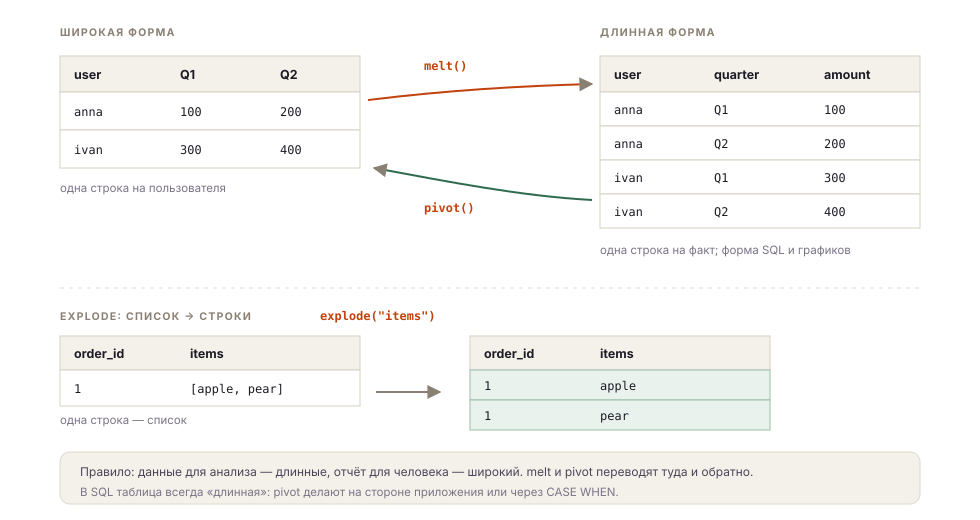

Даты, строки и форма таблицы Одна и та же информация может быть длинной или широкой — и это не мелочь
Последняя глава pandas — про три вещи, без которых отчёт не собрать: превратить дату из строки в дату, привести текст к нормальному виду и переложить таблицу так, чтобы с ней было удобно работать.
Словарь главы — если забыли термины
- datetime64
- Тип даты-времени в pandas; после него работают
.dtи разности. - .dt
- Аксессор частей даты:
.dt.year,.dt.month,.dt.day. - to_period
- Привести дату к периоду (месяц, квартал) — удобно для группировки.
- pivot
- Длинная таблица → широкая: значения колонки становятся колонками.
- melt
- Широкая таблица → длинная: колонки становятся строками.
- explode
- Развернуть список в ячейке в несколько строк.
01Зачем это backend-разработчику
- Даты — половина отчётов: «выручка по месяцам», «активность по дням», «сколько дней прошло с заказа».
- Строки приходят грязными: лишние пробелы, разный регистр, «город Москва» против «Москва».
- Форма таблицы определяет удобство: одно и то же можно хранить широко (по кварталам в колонках) или длинно (строки-факты).
- Собеседование: «как извлечь месяц из даты», «чем pivot отличается от pivot_table», «что делает explode».
02Ассоциация-якорь: гармошка
Таблица — это гармошка. Растянутая (широкая форма) — много колонок, мало строк, удобно смотреть глазами. Сложенная (длинная форма) — мало колонок, много строк, удобно фильтровать, группировать и рисовать графики.
melt складывает гармошку, pivot растягивает. explode — отдельный трюк: разворачивает список внутри одной ячейки в несколько строк.
03Ассоциативный ряд: восемь звеньев
- to_datetimeстрока → дата
- .dtгод, месяц, день, день недели
- to_periodмесяц как группа
- .strlower, strip, contains
- pivotдлинная → широкая
- meltширокая → длинная
- pivot_tablepivot с агрегацией
- explodeсписок → строки
04Схема: длинная и широкая формы

melt переводит в длинную,
pivot — обратно. explode разворачивает список в строки.
05Как это устроено на самом деле
Даты: datetime64, а не строки
pd.to_datetime разбирает строки и приводит колонку к типу
datetime64. После этого работают сравнения, разности и доступ
через .dt. Если оставить даты строками, сортировка будет лексикографической —
и «2024-10-01» окажется меньше «2024-2-01».
Строки: аксессор .str
df["col"].str.lower(), .strip(),
.contains(), .replace() работают векторно и корректно
обрабатывают пропуски (с na=False там, где нужно).
Длинная форма — это форма фактов
В длинной таблице одна строка — один факт: «anna, Q1, 100». В широкой — одна строка — объект,
а факты разложены по колонкам. Для groupby, фильтрации и графиков удобнее
длинная; для чтения глазами — широкая.
pivot против pivot_table
pivot требует, чтобы пара (index, columns) была уникальной — иначе ошибка.
pivot_table умеет агрегировать повторы через aggfunc.
Если в данных возможны дубли, берите вторую.
06Лаборатория: запустить и увидеть
Фрагменты файла 18_dates_reshape_lab.py.
Шаг 1. Строка становится датой
orders["date"] = pd.to_datetime(orders["date"]) print(orders["date"].dtype) print(orders["date"].dt.year.tolist(), orders["date"].dt.month.tolist())
Шаг 2. Месяц как группа
orders["month"] = orders["date"].dt.to_period("M")
print(orders.groupby("month")["amount"].sum())
Шаг 3. Строки: нормализация
print(users["email"].str.strip().str.lower().tolist())
print(users["email"].str.contains("@", na=False).tolist())
Шаг 4. pivot: длинная → широкая
wide = long.pivot(index="user", columns="quarter", values="amount") print(wide)
Шаг 5. melt: обратно
back = wide.reset_index().melt(id_vars="user", var_name="quarter", value_name="amount") print(back)
Шаг 6. explode: список → строки
print(baskets.explode("items"))
Шаг 7. pivot_table, когда в ячейке несколько значений
print(multi.pivot_table(index="user", columns="quarter", values="amount", aggfunc="sum"))
07Мост: даты, строки и reshape в SQL
Даты в SQL
SELECT DATE_TRUNC('month', o.created_at)::date AS month,
SUM(o.quantity * p.price) AS revenue
FROM orders o JOIN products p ON p.id = o.product_id
GROUP BY 1 ORDER BY 1;
SELECT EXTRACT(YEAR FROM created_at), EXTRACT(MONTH FROM created_at)
FROM orders;
Строки в SQL
SELECT LOWER(TRIM(email)) FROM users; SELECT * FROM users WHERE LOWER(city) LIKE '%москва%';
Pivot в SQL делают иначе
В SQL нет pivot: таблица всегда «длинная». Широкий отчёт собирают
через CASE WHEN и агрегаты или на стороне приложения. Поэтому привычка
«сначала длинная форма, потом pivot» переносится в оба мира.
08Шесть ошибок, на которых спотыкаются
Сортировка лексикографическая, арифметика невозможна, .dt падает.
pd.to_datetime(col, errors="coerce") и проверка пропусков.«01/02/2024» — это 1 февраля или 2 января? Без format pandas может угадать не так.
format="%d/%m/%Y" явно.AttributeError: Can only use .dt accessor with datetimelike values.
to_datetime.ValueError: Index contains duplicate entries, cannot reshape.
pivot_table.После melt колонка значений может получить общий тип, а строки — новый индекс.
dtypes; при необходимости astype и reset_index.Число строк растёт как сумма длин списков — можно неожиданно получить миллионы строк.
09Вопросы с собеседования
Как превратить строку в дату?
pd.to_datetime(col, format=...). После этого доступны сравнения, разности и .dt.
Как извлечь месяц или год?
df["date"].dt.month, .dt.year, .dt.to_period("M") для группировки по месяцам.
Что делает .str?
Применяет строковые операции ко всей колонке: lower, strip, contains, replace, split.
Чем pivot отличается от pivot_table?
pivot требует уникальных пар и раскладывает значения; pivot_table агрегирует повторы через aggfunc.
Что делает melt?
«Складывает» широкую таблицу в длинную: колонки становятся значениями в колонке-переменной.
Зачем explode?
Разворачивает список в ячейке в несколько строк. Удобно для «заказ → товары», где товары хранятся списком.
Почему длинная форма удобнее для анализа?
Потому что в ней одна строка — один факт: её можно фильтровать, группировать и рисовать без перебора колонок. Широкая форма удобна для отчёта человеку.
Как в SQL сделать то же, что pivot?
Через CASE WHEN плюс агрегат, либо на стороне приложения. В SQL таблица всегда длинная.
10Три задачи: сначала своя попытка
01 Выручка по месяцам
Из заказов с датой получите сумму по месяцам.
Показать решение
orders["date"] = pd.to_datetime(orders["date"])
monthly = orders.groupby(orders["date"].dt.to_period("M"))["amount"].sum()
print(monthly)
Что важно. Период, а не просто месяц-число: январь 2024 и январь 2025 — разные группы.
02 Нормализация города
Приведите города к нижнему регистру без пробелов и посчитайте количество по каждому.
Показать решение
df["city"] = df["city"].str.strip().str.lower() print(df["city"].value_counts())
03 Кварталы в колонки
Из длинной таблицы (user, quarter, amount) сделайте широкую с колонками Q1 и Q2.
Показать решение
wide = long.pivot(index="user", columns="quarter", values="amount") print(wide)
Что важно. Если пар (user, quarter) несколько — нужен pivot_table.